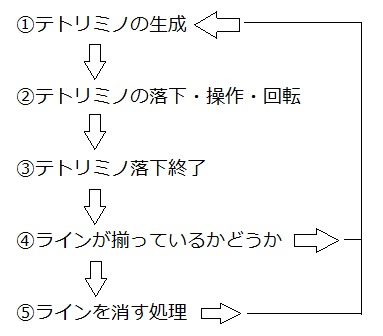

ここからがテトリス固有のものです。
テトリスのルールを知らない人はいないと思いますが、
プログラムとしてどう処理していくのかを考えます。
テトリスのゲーム部分のみを考えると(タイトルとかスタート・ゲームオーバー画面を除くと)
以下のような流れになると思います。

テトリミノとは4つのブロック群(T字型とかL字型とかあるやつ)のことで、
細かい定義は後でしますが、それぞれをクラス化して扱います。
この画像中では②が難しいです。
回転は思いの他簡単にはいきません。
今回は短いですがこれで終了です。
次回は画像を読み込んだりする初期化処理を書いていきます。